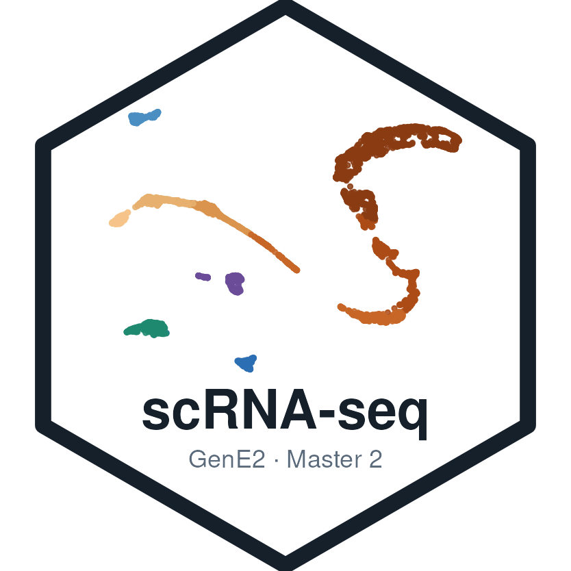

bash
docker run \
--volume <local_folder>:/data \
-e PASSWORD=gene2 \
-p 8787:8787 \
ghcr.io/js2264/gene2scrnaseqintro:develGenE2 Master 2 · Single-Cell Omics and Spatial Transcriptomics

Package: GenE2scRNAseqIntro
Authors: Jacques Serizay [aut, cre]
Compiled: 2026-10-27
Package version: 0.99.0
R version: R version 4.6.1 (2026-06-24)
BioC version: 3.24
License: MIT + file LICENSE
This book supports a 2h30 live-coding workshop on the analysis of single-cell RNA-seq data with Bioconductor, taught in the Single-Cell Omics and Spatial Transcriptomics teaching unit of the GenE2 Master 2.
Starting from the UMI count matrix of an adult human testis, you will learn to:
SingleCellExperiment;| Chapter | Content | When |
|---|---|---|
| 1 From cells to counts: the 10x Genomics workflow | How a 10x Genomics experiment produces a count matrix | read before the session (~15 min) |
| 2 Hands-on: from a count matrix to cell types | The hands-on session, all on one page | live, 2h30 |
Basic R: vectors, data frames, indexing with [, calling functions and loading packages with library(). No prior experience of Bioconductor is needed: the workshop introduces the containers it uses as it goes.
Everything the workshop needs comes in a single Docker image, built from this repository by GitHub Actions: R, Bioconductor and every package of the book, plus the count matrix and the reference data, downloaded in advance.
👉 ghcr.io/js2264/gene2scrnaseqintro 🐳
Each participant gets their own RStudio Server, running from the workshop image on the Orchestra platform: nothing to install.
data folder of your home directory: this is where you will type the code of the session.A copy of the workshop page, workshop/workshop.qmd, is also in your home directory, in case you lose track of the shared screen.
Each session has a countdown, shown on its card in the dashboard: use +1h to extend it. When it ends, everything in it is deleted, except the data folder, which comes back in your next session of the workshop. Download anything else you want to keep (Files pane > More > Export) before the end.
The same environment runs on any computer with Docker installed. Start an RStudio Server from the image:
bash
docker run \
--volume <local_folder>:/data \
-e PASSWORD=gene2 \
-p 8787:8787 \
ghcr.io/js2264/gene2scrnaseqintro:develthen open http://localhost:8787 and log in as rstudio, with the password set above (gene2). <local_folder>, a folder of your computer, appears as data in RStudio’s home directory: save your work there. For an R console only:
bash
docker run -it ghcr.io/js2264/gene2scrnaseqintro:devel RYou need R (>= 4.6.0), a recent Bioconductor and about 8 GB of RAM. The workshop’s R package lists every package used in the book, so installing it with its dependencies installs them all:
install.packages("BiocManager")
BiocManager::install("js2264/GenE2-scRNAseq-intro", dependencies = TRUE)The count matrix is downloaded from GEO the first time you run the workshop code, and cached for later sessions.
The hands-on session analyses the adult human testis atlas of Guo et al. (2018): 6,490 cells from three healthy young donors, captured in two technical replicates each with the 10x Genomics Chromium platform (GSE112013). The dataset of the hands-on session explains why it makes a good teaching dataset.
This workshop is adapted from the BiocAfrica 2026 single-cell RNA-seq workshop. Its workflow follows the scrapbook and OSCA books (Amezquita et al. 2020), and it was written with BiocBook (Serizay 2023).
sessioninfo::session_info(
installed.packages()[,"Package"],
include_base = TRUE
)
## ─ Session info ────────────────────────────────────────────────────────────
## setting value
## version R version 4.6.1 (2026-06-24)
## os Ubuntu 24.04.5 LTS
## system x86_64, linux-gnu
## ui X11
## language (EN)
## collate C
## ctype en_US.UTF-8
## tz Etc/UTC
## date 2026-10-27
## pandoc 3.12.1 @ /usr/bin/ (via rmarkdown)
## quarto 1.11.5 @ /usr/local/bin/quarto
##
## ─ Packages ────────────────────────────────────────────────────────────────
## package * version date (UTC) lib source
## abind 1.4-8 2024-09-12 [2] RSPM (R 4.6.0)
## alabaster.base 1.13.4 2026-09-06 [2] Bioconductor 3.24 (R 4.6.1)
## alabaster.matrix 1.13.4 2026-09-23 [2] Bioconductor 3.24 (R 4.6.1)
## alabaster.ranges 1.13.1 2026-09-06 [2] Bioconductor 3.24 (R 4.6.1)
## alabaster.schemas 1.13.0 2026-04-28 [2] Bioconductor 3.24 (R 4.6.1)
## alabaster.se 1.13.1 2026-09-06 [2] Bioconductor 3.24 (R 4.6.1)
## AnnotationDbi 1.75.2 2026-07-21 [2] Bioconductor 3.24 (R 4.6.1)
## AnnotationHub 4.3.3 2026-10-23 [2] Bioconductor 3.24 (R 4.6.1)
## askpass 1.2.1 2024-10-04 [2] RSPM (R 4.6.0)
## assorthead 1.7.11 2026-10-08 [2] Bioconductor 3.24 (R 4.6.1)
## base * 4.6.1 2026-10-15 [3] local
## base64enc 0.1-6 2026-02-02 [2] RSPM (R 4.6.0)
## beachmat 2.29.3 2026-09-23 [2] Bioconductor 3.24 (R 4.6.1)
## beeswarm 0.4.0 2021-06-01 [2] RSPM (R 4.6.0)
## BH 1.90.0-1 2025-12-14 [2] RSPM (R 4.6.0)
## Biobase 2.73.2 2026-07-29 [2] Bioconductor 3.24 (R 4.6.1)
## BiocBaseUtils 1.15.1 2026-05-10 [2] Bioconductor 3.24 (R 4.6.1)
## BiocBook 1.11.4 2026-10-05 [2] Bioconductor 3.24 (R 4.6.1)
## BiocFileCache 3.3.0 2026-04-28 [2] Bioconductor 3.24 (R 4.6.1)
## BiocGenerics 0.59.12 2026-08-11 [2] Bioconductor 3.24 (R 4.6.1)
## biocmake 1.5.1 2026-08-21 [2] Bioconductor 3.24 (R 4.6.1)
## BiocManager 1.30.27 2025-11-14 [2] CRAN (R 4.6.1)
## BiocNeighbors 2.7.3 2026-08-21 [2] Bioconductor 3.24 (R 4.6.1)
## BiocParallel 1.47.0 2026-04-28 [2] Bioconductor 3.24 (R 4.6.1)
## BiocSingular 1.29.2 2026-10-08 [2] Bioconductor 3.24 (R 4.6.1)
## BiocStyle 2.41.0 2026-04-28 [2] Bioconductor 3.24 (R 4.6.1)
## BiocVersion 3.24.0 2026-04-28 [2] Bioconductor 3.24 (R 4.6.1)
## Biostrings 2.81.9 2026-09-06 [2] Bioconductor 3.24 (R 4.6.1)
## bit 4.6.0 2025-03-06 [2] RSPM (R 4.6.0)
## bit64 4.8.6 2026-09-01 [2] RSPM (R 4.6.0)
## blob 1.3.0 2026-01-14 [2] RSPM (R 4.6.0)
## bookdown 0.48 2026-08-28 [2] RSPM (R 4.6.0)
## boot 1.3-32 2025-08-29 [3] CRAN (R 4.6.1)
## brew 1.0-10 2023-12-16 [2] RSPM (R 4.6.0)
## brio 1.1.5 2024-04-24 [2] RSPM (R 4.6.0)
## bslib 0.12.0 2026-08-04 [2] RSPM (R 4.6.0)
## cachem 1.1.0 2024-05-16 [2] RSPM (R 4.6.0)
## callr 3.8.0 2026-06-05 [2] RSPM (R 4.6.0)
## celldex 1.23.0 2026-04-30 [2] Bioconductor 3.24 (R 4.6.1)
## class 7.3-24 2026-08-03 [2] RSPM (R 4.6.1)
## cli 3.6.6 2026-04-09 [2] RSPM (R 4.6.0)
## clipr 0.8.1 2026-05-25 [2] RSPM (R 4.6.0)
## cluster 2.1.8.3 2026-07-30 [2] RSPM (R 4.6.1)
## codetools 0.2-20 2024-03-31 [3] CRAN (R 4.6.1)
## commonmark 2.0.0 2025-07-07 [2] RSPM (R 4.6.0)
## compiler 4.6.1 2026-10-15 [3] local
## cpp11 0.5.5 2026-05-06 [2] RSPM (R 4.6.0)
## crayon 1.5.3 2024-06-20 [2] RSPM (R 4.6.0)
## credentials 2.0.3 2025-09-12 [2] RSPM (R 4.6.0)
## curl 8.1.0 2026-10-14 [2] RSPM (R 4.6.0)
## datasets * 4.6.1 2026-10-15 [3] local
## DBI 1.3.0 2026-02-25 [2] RSPM (R 4.6.0)
## dbplyr 2.6.0 2026-06-17 [2] RSPM (R 4.6.0)
## DelayedArray 0.39.8 2026-09-30 [2] Bioconductor 3.24 (R 4.6.1)
## DelayedMatrixStats 1.35.0 2026-04-28 [2] Bioconductor 3.24 (R 4.6.1)
## desc 1.4.3 2023-12-10 [2] RSPM (R 4.6.0)
## DESeq2 1.53.6 2026-10-02 [2] Bioconductor 3.24 (R 4.6.1)
## devtools 2.5.2 2026-04-30 [2] RSPM (R 4.6.0)
## diffobj 0.3.9 2026-09-11 [2] RSPM (R 4.6.0)
## digest 0.6.39 2025-11-19 [2] RSPM (R 4.6.0)
## dir.expiry 1.21.0 2026-04-28 [2] Bioconductor 3.24 (R 4.6.1)
## docopt 0.7.2 2025-03-25 [2] RSPM (R 4.6.1)
## downlit 0.4.5 2025-11-14 [2] RSPM (R 4.6.0)
## dplyr 1.2.1 2026-04-03 [2] RSPM (R 4.6.0)
## dqrng 0.4.1 2024-05-28 [2] RSPM (R 4.6.0)
## ellipsis 0.3.3 2026-04-04 [2] RSPM (R 4.6.0)
## evaluate 1.0.5 2025-08-27 [2] RSPM (R 4.6.0)
## ExperimentHub 3.3.2 2026-08-12 [2] Bioconductor 3.24 (R 4.6.1)
## fansi 1.0.7 2025-11-19 [2] RSPM (R 4.6.0)
## farver 2.1.2 2024-05-13 [2] RSPM (R 4.6.0)
## fastmap 1.2.0 2024-05-15 [2] RSPM (R 4.6.0)
## filelock 1.0.3 2023-12-11 [2] RSPM (R 4.6.0)
## FNN 1.1.4.1 2024-09-22 [2] RSPM (R 4.6.0)
## fontawesome 0.5.3 2024-11-16 [2] RSPM (R 4.6.0)
## foreign 0.8-92 2026-10-17 [2] RSPM (R 4.6.1)
## formatR 1.14 2023-01-17 [2] RSPM (R 4.6.0)
## fs 2.1.0 2026-04-18 [2] RSPM (R 4.6.0)
## futile.logger 1.4.9 2025-12-29 [2] RSPM (R 4.6.0)
## futile.options 1.0.1 2018-04-20 [2] RSPM (R 4.6.0)
## GenE2scRNAseqIntro 0.99.0 2026-10-27 [1] local
## generics 0.1.4 2025-05-09 [2] RSPM (R 4.6.0)
## GenomicRanges 1.65.4 2026-09-02 [2] Bioconductor 3.24 (R 4.6.1)
## gert 2.5.0 2026-10-14 [2] RSPM (R 4.6.0)
## ggbeeswarm 0.7.3 2025-11-29 [2] RSPM (R 4.6.0)
## ggplot2 4.0.3 2026-04-22 [2] RSPM (R 4.6.0)
## ggrepel 0.9.8 2026-03-17 [2] RSPM (R 4.6.0)
## gh 1.6.1 2026-07-20 [2] RSPM (R 4.6.0)
## gitcreds 0.1.2 2022-09-08 [2] RSPM (R 4.6.0)
## glue 1.8.1 2026-04-17 [2] RSPM (R 4.6.0)
## graphics * 4.6.1 2026-10-15 [3] local
## grDevices * 4.6.1 2026-10-15 [3] local
## grid 4.6.1 2026-10-15 [3] local
## gridExtra 2.3.1 2026-06-25 [2] RSPM (R 4.6.0)
## gtable 0.3.6 2024-10-25 [2] RSPM (R 4.6.0)
## gypsum 1.9.0 2026-04-28 [2] Bioconductor 3.24 (R 4.6.1)
## h5mread 1.5.3 2026-09-02 [2] Bioconductor 3.24 (R 4.6.1)
## HDF5Array 1.41.3 2026-08-21 [2] Bioconductor 3.24 (R 4.6.1)
## here 1.0.2 2025-09-15 [2] RSPM (R 4.6.0)
## highr 0.12 2026-03-06 [2] RSPM (R 4.6.0)
## htmltools 0.5.9 2025-12-04 [2] RSPM (R 4.6.0)
## htmlwidgets 1.6.4 2023-12-06 [2] RSPM (R 4.6.0)
## httpuv 1.6.17 2026-03-18 [2] RSPM (R 4.6.0)
## httr 1.4.9 2026-09-01 [2] RSPM (R 4.6.0)
## httr2 1.3.0 2026-07-13 [2] RSPM (R 4.6.0)
## ini 0.3.1 2018-05-20 [2] RSPM (R 4.6.0)
## IRanges 2.47.5 2026-08-27 [2] Bioconductor 3.24 (R 4.6.1)
## irlba 2.4.1 2026-10-05 [2] RSPM (R 4.6.0)
## isoband 0.3.0 2025-12-07 [2] RSPM (R 4.6.0)
## jquerylib 0.1.4 2021-04-26 [2] RSPM (R 4.6.0)
## jsonlite 2.0.0 2025-03-27 [2] RSPM (R 4.6.0)
## jsonvalidate 1.5.0 2025-02-07 [2] RSPM (R 4.6.0)
## KEGGREST 1.53.6 2026-07-23 [2] Bioconductor 3.24 (R 4.6.1)
## KernSmooth 2.23-27 2026-08-12 [2] RSPM (R 4.6.1)
## knitr 1.52 2026-09-06 [2] RSPM (R 4.6.0)
## labeling 0.4.3 2023-08-29 [2] RSPM (R 4.6.0)
## lambda.r 1.2.6 2026-10-13 [2] RSPM (R 4.6.0)
## later 1.4.8 2026-03-05 [2] RSPM (R 4.6.0)
## lattice 0.23-1 2026-08-12 [2] RSPM (R 4.6.1)
## lifecycle 1.0.5 2026-01-08 [2] RSPM (R 4.6.0)
## littler 0.3.23 2026-04-12 [2] RSPM (R 4.6.1)
## locfit 1.5-9.12 2025-03-05 [2] RSPM (R 4.6.0)
## magrittr 2.0.5 2026-04-04 [2] RSPM (R 4.6.0)
## MASS 7.3-66 2026-07-15 [2] RSPM (R 4.6.1)
## Matrix 1.7-6 2026-07-25 [2] RSPM (R 4.6.1)
## MatrixGenerics 1.25.0 2026-04-28 [2] Bioconductor 3.24 (R 4.6.1)
## matrixStats 1.5.0 2025-01-07 [2] RSPM (R 4.6.0)
## memoise 2.0.1 2021-11-26 [2] RSPM (R 4.6.0)
## methods * 4.6.1 2026-10-15 [3] local
## mgcv 1.9-4 2025-11-07 [3] CRAN (R 4.6.1)
## mime 0.13 2025-03-17 [2] RSPM (R 4.6.0)
## miniUI 0.1.2 2025-04-17 [2] RSPM (R 4.6.0)
## nlme 3.1-171 2026-09-01 [2] RSPM (R 4.6.1)
## nnet 7.3-21 2026-08-03 [2] RSPM (R 4.6.1)
## openssl 2.4.2 2026-06-09 [2] RSPM (R 4.6.0)
## otel 0.2.0 2025-08-29 [2] RSPM (R 4.6.0)
## pak 0.11.1 2026-07-22 [2] RSPM (R 4.6.0)
## parallel 4.6.1 2026-10-15 [3] local
## patchwork 1.3.2 2025-08-25 [2] RSPM (R 4.6.0)
## pheatmap 1.0.13 2025-06-05 [2] RSPM (R 4.6.0)
## pillar 1.11.1 2025-09-17 [2] RSPM (R 4.6.0)
## pkgbuild 1.4.8 2025-05-26 [2] RSPM (R 4.6.0)
## pkgconfig 2.0.3 2019-09-22 [2] RSPM (R 4.6.0)
## pkgdown 2.2.1 2026-07-07 [2] RSPM (R 4.6.0)
## pkgload 1.5.3 2026-06-15 [2] RSPM (R 4.6.0)
## png 0.1-9 2026-03-15 [2] RSPM (R 4.6.0)
## praise 1.0.0 2015-08-11 [2] RSPM (R 4.6.0)
## preprocessCore 1.75.1 2026-08-31 [2] Bioconductor 3.24 (R 4.6.1)
## prettyunits 1.2.0 2023-09-24 [2] RSPM (R 4.6.0)
## processx 3.9.0 2026-04-22 [2] RSPM (R 4.6.0)
## profvis 0.4.0 2024-09-20 [2] RSPM (R 4.6.0)
## promises 1.5.0 2025-11-01 [2] RSPM (R 4.6.0)
## ps 1.9.3 2026-04-20 [2] RSPM (R 4.6.0)
## purrr 1.2.2 2026-04-10 [2] RSPM (R 4.6.0)
## quarto 1.5.1 2025-09-04 [2] RSPM (R 4.6.0)
## R6 2.6.1 2025-02-15 [2] RSPM (R 4.6.0)
## ragg 1.5.2 2026-03-23 [2] RSPM (R 4.6.0)
## rappdirs 0.3.4 2026-01-17 [2] RSPM (R 4.6.0)
## rcmdcheck 1.4.0 2021-09-27 [2] RSPM (R 4.6.0)
## RColorBrewer 1.1-3 2022-04-03 [2] RSPM (R 4.6.0)
## Rcpp 1.1.2 2026-07-05 [2] RSPM (R 4.6.0)
## RcppAnnoy 0.0.23 2026-01-12 [2] RSPM (R 4.6.0)
## RcppArmadillo 15.6.2-1 2026-10-17 [2] RSPM (R 4.6.0)
## RcppEigen 0.3.4.0.2 2024-08-24 [2] RSPM (R 4.6.0)
## RcppML 0.3.7.1 2026-03-09 [2] RSPM (R 4.6.0)
## RcppProgress 0.4.2 2020-02-06 [2] RSPM (R 4.6.0)
## RcppTOML 0.2.3 2025-03-08 [2] RSPM (R 4.6.0)
## rdtools 0.1.0 2026-07-16 [2] RSPM (R 4.6.0)
## remotes 2.5.0 2024-03-17 [2] RSPM (R 4.6.0)
## renv 1.3.1 2026-10-06 [2] RSPM (R 4.6.0)
## reticulate 1.47.0 2026-09-03 [2] RSPM (R 4.6.0)
## rhdf5 2.57.20 2026-10-06 [2] Bioconductor 3.24 (R 4.6.1)
## rhdf5filters 1.25.4 2026-08-06 [2] Bioconductor 3.24 (R 4.6.1)
## Rhdf5lib 2.1.0 2026-04-28 [2] Bioconductor 3.24 (R 4.6.1)
## Rigraphlib 1.5.1 2026-05-08 [2] Bioconductor 3.24 (R 4.6.1)
## rlang 1.3.0 2026-07-05 [2] RSPM (R 4.6.0)
## rmarkdown 2.32 2026-09-01 [2] RSPM (R 4.6.0)
## roxygen2 8.1.1 2026-10-08 [2] RSPM (R 4.6.0)
## rpart 4.1.27 2026-03-27 [3] CRAN (R 4.6.1)
## rprojroot 2.1.1 2025-08-26 [2] RSPM (R 4.6.0)
## RSpectra 0.16-2 2024-07-18 [2] RSPM (R 4.6.0)
## RSQLite 3.53.3 2026-06-30 [2] RSPM (R 4.6.0)
## rstudioapi 0.19.0 2026-06-11 [2] RSPM (R 4.6.0)
## rsvd 1.0.6 2026-10-17 [2] RSPM (R 4.6.0)
## Rtsne 0.17 2023-12-07 [2] RSPM (R 4.6.0)
## rversions 3.0.0 2025-10-09 [2] RSPM (R 4.6.0)
## S4Arrays 1.13.2 2026-09-30 [2] Bioconductor 3.24 (R 4.6.1)
## S4Vectors 0.51.10 2026-09-16 [2] Bioconductor 3.24 (R 4.6.1)
## S7 0.2.2 2026-04-22 [2] RSPM (R 4.6.0)
## sass 0.4.10 2025-04-11 [2] RSPM (R 4.6.0)
## ScaledMatrix 1.21.0 2026-04-28 [2] Bioconductor 3.24 (R 4.6.1)
## scales 1.4.0 2025-04-24 [2] RSPM (R 4.6.0)
## scater 1.41.3 2026-10-25 [2] Bioconductor 3.24 (R 4.6.1)
## scrapper 1.7.9 2026-08-28 [2] Bioconductor 3.24 (R 4.6.1)
## scuttle 1.23.2 2026-08-27 [2] Bioconductor 3.24 (R 4.6.1)
## Seqinfo 1.3.2 2026-08-27 [2] Bioconductor 3.24 (R 4.6.1)
## sessioninfo 1.2.4 2026-06-04 [2] RSPM (R 4.6.0)
## shiny 1.14.0 2026-06-21 [2] RSPM (R 4.6.0)
## SingleCellExperiment 1.35.2 2026-07-16 [2] Bioconductor 3.24 (R 4.6.1)
## SingleR 2.15.4 2026-09-10 [2] Bioconductor 3.24 (R 4.6.1)
## sitmo 2.0.2 2021-10-13 [2] RSPM (R 4.6.0)
## snow 0.4-4 2021-10-27 [2] RSPM (R 4.6.0)
## sourcetools 0.1.7-2 2026-03-28 [2] RSPM (R 4.6.0)
## SparseArray 1.13.4 2026-09-30 [2] Bioconductor 3.24 (R 4.6.1)
## sparseMatrixStats 1.25.0 2026-04-28 [2] Bioconductor 3.24 (R 4.6.1)
## spatial 7.3-19 2026-08-03 [2] RSPM (R 4.6.1)
## splines 4.6.1 2026-10-15 [3] local
## stats * 4.6.1 2026-10-15 [3] local
## stats4 4.6.1 2026-10-15 [3] local
## stringi 1.8.9 2026-08-04 [2] RSPM (R 4.6.0)
## stringr 1.6.0 2025-11-04 [2] RSPM (R 4.6.0)
## SummarizedExperiment 1.43.0 2026-04-28 [2] Bioconductor 3.24 (R 4.6.1)
## survival 3.8-12 2026-09-09 [2] RSPM (R 4.6.1)
## sys 3.4.3 2024-10-04 [2] RSPM (R 4.6.0)
## systemfonts 1.3.2 2026-03-05 [2] RSPM (R 4.6.0)
## tcltk 4.6.1 2026-10-15 [3] local
## testthat 3.3.2 2026-01-11 [2] RSPM (R 4.6.0)
## textshaping 1.0.5 2026-03-06 [2] RSPM (R 4.6.0)
## tibble 3.3.1 2026-01-11 [2] RSPM (R 4.6.0)
## tidyr 1.3.2 2025-12-19 [2] RSPM (R 4.6.0)
## tidyselect 1.2.1 2024-03-11 [2] RSPM (R 4.6.0)
## tinytex 0.61 2026-09-17 [2] RSPM (R 4.6.0)
## tools 4.6.1 2026-10-15 [3] local
## urlchecker 2.0.0 2026-07-08 [2] RSPM (R 4.6.0)
## usethis 3.2.2 2026-09-10 [2] RSPM (R 4.6.0)
## utf8 1.2.6 2025-06-08 [2] RSPM (R 4.6.0)
## utils * 4.6.1 2026-10-15 [3] local
## uwot 0.2.5 2026-08-29 [2] RSPM (R 4.6.0)
## V8 8.2.1 2026-10-26 [2] RSPM (R 4.6.0)
## vctrs 0.7.3 2026-04-11 [2] RSPM (R 4.6.0)
## vipor 0.4.7 2023-12-18 [2] RSPM (R 4.6.0)
## viridis 0.6.5 2024-01-29 [2] RSPM (R 4.6.0)
## viridisLite 0.4.3 2026-02-04 [2] RSPM (R 4.6.0)
## waldo 0.6.2 2025-07-11 [2] RSPM (R 4.6.0)
## whisker 0.4.1 2022-12-05 [2] RSPM (R 4.6.0)
## withr 3.0.3 2026-06-19 [2] RSPM (R 4.6.0)
## xfun 0.62 2026-10-16 [2] RSPM (R 4.6.0)
## xml2 1.6.0 2026-06-22 [2] RSPM (R 4.6.0)
## xopen 1.0.1 2024-04-25 [2] RSPM (R 4.6.0)
## xtable 1.8-8 2026-02-22 [2] RSPM (R 4.6.0)
## XVector 0.53.0 2026-04-28 [2] Bioconductor 3.24 (R 4.6.1)
## yaml 2.3.12 2025-12-10 [2] RSPM (R 4.6.0)
## zip 3.0.2 2026-08-04 [2] RSPM (R 4.6.0)
##
## [1] /tmp/RtmpumKCBl/Rinstb2e478030
## [2] /usr/local/lib/R/site-library
## [3] /usr/local/lib/R/library
## * ── Packages attached to the search path.
##
## ─ Python configuration ────────────────────────────────────────────────────
## Python is not available
##
## ───────────────────────────────────────────────────────────────────────────